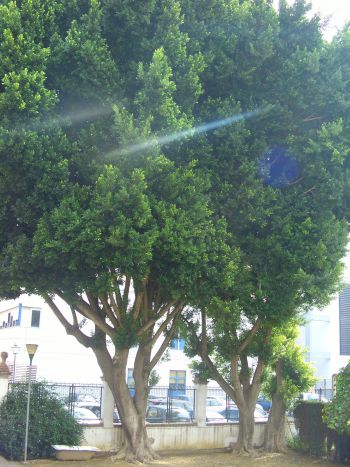

|
Ficus
retusa L., Mantisa 129
(1767) |
Moráceas |
| Laurel de Indias | Árbol perennifolio |
|
Árbol monoico, perennifolio,
de unos 19 a 20 m (puede alcanzar hasta los 25 m de
altura)(1);
tronco de 10 a 30 cm de diámetro, con costillas
irregulares, de
color grisáceo y con pintas alargadas de color blanco.
Hojas alternas, simples, cortamente pecioladas; laminas de 3-8 x1,5-5 cm, elípticas u ovadas, enteras, gruesas y algo coriáceas, lustrosa, glabras y de color verde brillante. Inflorescencias masculinas en forma de amentos de 3-7cm, las femeninas forma de siconos globosos cubiertos de pelos patentes. Flores muy pequeñas de color blanco, encerradas dentro de siconos. Infrutescencias carnosas (higos), de 5-8 mm, globosas, dispuestas en parejas, de color marrón oscuro o negruzca. |
 Foto: Elisa Lizana, 2006 |
|
Espacio para fotos de detalles |
Observaciones: Se describió originalmente en 1781 procedente de la isla de Java. De climas cálidos, frecuente en el litoral mediterráneo y Canarias. Sensible al frío. Pueden formar raíces aéreas. Se utiliza en jardinería por la calidad de sus hojas y para la producción de sombra en parques y en alineaciones de calles. |
| Área de origen.- Natural de India, sur de China, sudeste de Asia, Australia y Oceanía. | |
| Uso en
el
campus: Existen 3 ejemplares
viejos dentro del jardín del Colegio Mayor Hernando
Colón. |
Localización: Colegio Mayor Hernando Colón |
|
Referencias: |
|
| Elisa Lizana Montero (2006) & Carlos Romero Zarco (2007) | |